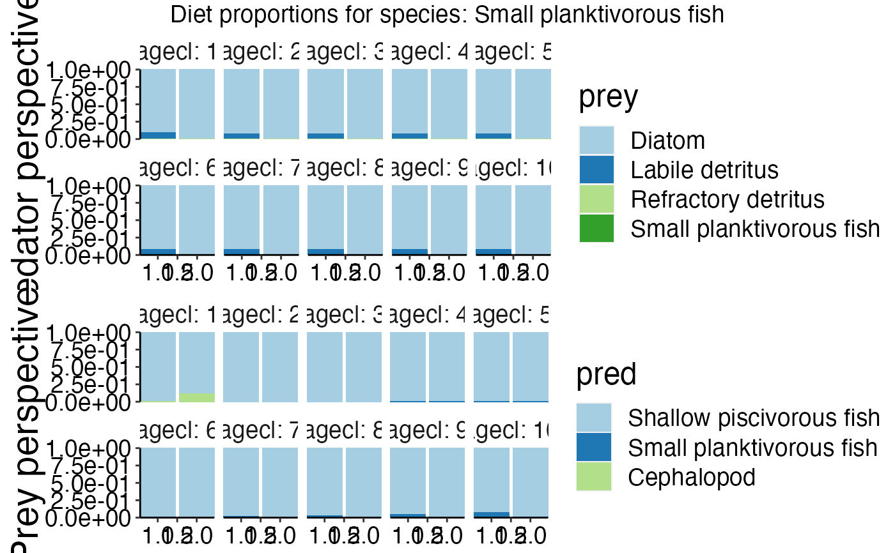

Visualize diet proportions form predator and prey perspective. The upper panel
plot shows the predator perspective while the lower panel plot shows the prey perspective
for a given group. Please note that this function only works with models
based on the trunk code. Bec_dev models should use plot_diet_bec_dev to get an indication
of the feeding interactions.
plot_diet(bio_consumed, species = NULL, wrap_col = "agecl", combine_thresh = 7)
| bio_consumed | Consumed biomass of prey groups by predatorgroup and agecl in tonnes
for each timestep and polygon. Dataframe with columns 'pred', 'agecl', 'polygon', 'time', 'prey'.
Consumed biomass in [t] is stored in column 'atoutput'. Should be generated with
|
|---|---|
| species | Character string giving the acronyms of the species you aim to plot. Default is
|
| wrap_col | Character specifying the column of the dataframe to be used as multipanel plot.
Default is |
| combine_thresh | Number of different categories to plot. Lets say predator X has eaten
20 different prey items. If you only want to show the 3 most important prey items set
|
List of grobs composed of ggplot2 objects.
Other plot functions:
plot_bar(),
plot_boxes(),
plot_diet_bec_dev(),
plot_line(),
plot_rec(),
plot_species()
if (FALSE) { plots <- plot_diet(ref_bio_cons, wrap_col = "agecl") gridExtra::grid.arrange(plots[[1]]) gridExtra::grid.arrange(plots[[7]]) # Use names() to get the species names! names(plots) } plot <- plot_diet(ref_bio_cons, species = "Small planktivorous fish", wrap_col = "agecl")#>#>